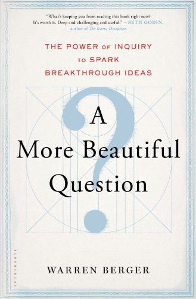

The Power of Inquiry to Spark Breakthrough Ideas
Author: Warren Burger
Purchase on: Amazon
📖 The book in 3 sentences
Good questions are often better than answers (they help us become more creative, engaged, innovative,etc.) but unfortunately most of us lose this ability as we grow up even though questioning is natural to most children.
Questioning in business and in life can be hard, but the more we question the better we become at it, and to help us the author proposes the Why (gain understanding), What if (generate hypotheses) and How (produce practical actions) framework.
Finding a beautiful question to pursue can be challenging, fulfilling, and propulsive as powerful and compelling questions are hard to set aside, they never sleep.
👉 Why it matters
The author’s interest in questions was born out of multiple interviews with some of the world’s leading inventors and creative minds. The only common pattern he was able to identify across the people he interviewed was that they were extremely good at asking questions. For example, the author refers to research by Clayton Christensen with Hal Gregersen and Jeff Dyer coauthored research showing that questioning is a key success factor among innovative executives.
Unfortunately, many companies, schools and other organizations (consciously or unconsciously) have cultures that don’t encourage honest inquiry. This book also tries to understand why questioning becomes less natural to the majority of us as we grow older.
But for me, this last theme in the book is why it matters the most. As life goes by, most of us seem to lose a great part of the creativity, imagination and joy that we have as kids. So, if we want to become more child-like once again then maybe, as the book puts it, we should rediscover one of the tools children are so good at using: questions.
💭 Thoughts
I love how this book about questioning is designed and structured around questions. There are 44 questions that divide each of the sections of the chapters, and even more questions within each section.
This book is also very practical in its approach to questioning. The framework and ideas found in this book can be applied to any type of context, but the author emphasizes that his focus is not on great philosophical or spiritual questions. His focus is on questions that can produce action and tangible change.
Apart from the value we get from good questions, it turns out that the act of questioning is itself very engaging. The author often refers to the question-based teaching approach used in the Right Question Institute. I immediately tried this approach with youth as part of volunteer activities I do, and at work. Participation improved significantly and the discussions were more energized.
At least for me, by the end of this book I actually felt inspired to ask more questions and to try to find beautiful questions to answer. I expect to learn new things from the books I read and I like it when I do, but I appreciate even more when a book is like a pause button in life and forces me to stop and reflect about where I’m going. This was one of those books.
💡 My top 3 quotes
“Questions challenge authority and disrupt established structures, processes, and systems, forcing people to have to at least think about doing something differently. To encourage or even allow questioning is to cede power”
“[Questioning] often has an inverse relationship to expertise - such that within their own subject areas, experts are apt to be poor questioners”
“As [Eric] Ries point out, anytime you’re doing something new it’s an experiment whether you admit it or not. Because it is not a fact that it’s going to work”
📚 Summary + Notes
Introduction
The author’s interest in questioning started when he was interviewing some of the most innovative minds for a series of articles and a book he wrote. One common denominator he found was that they were all very good as asking questions.
For many of them, their breakthrough products, solutions or services started with a key question or a series of questions that they asked and then answered.
Interestingly though, most companies and schools don’t teach or encourage good questioning. It is often seen as a waste of time, rebellion towards authority or as a sign of ignorance. Therefore, obedience and memorization is often favored in these settings.
Anyone who has been around small children for a while knows that asking questions comes naturally to them. The book quotes a study that claims that the average girl in the UK asks her mother 390 questions per day. Over time children ask less and less questions.
The title of the book was borrowed from this quote:
“Always the beautiful answer who asks a more beautiful question” - E. E. Cummings
It is then worth asking ourselves why questioning is not as common as we could expect. To answer this we have to remember that questions tend to disrupt processes and structures that already exist. Questions also force us to wonder if things could be done differently. So, in a way, encouraging people to ask questions implies giving up power. To allow for more questioning means that the people in charge (e.g. leaders or teachers) need to be willing to give up control.
After a great number of interviews and borrowing from well-known theories in areas like design thinking, the author crated a three-part framework to formulate and tackle big, beautiful questions:
- Why?
- What if?
- How?
The author also finishes the introduction with his own subjective definition of a beautiful question:
“A beautiful question is an ambitious yet actionable question that can begin to shift the way we perceive or think about something and that might serve as a catalyst to bring about change”.
Chapter 1: The Power of Inquiry
If they can put a man on the moon, why can’t they make a decent foot?
This chapter starts with the emotional but very powerful story about Van Phillips, who received a prosthetic leg of wood and foam rubber after he lost his leg in a water-skiing accident in the late 1970s.
Phillips asked “Why can’t a prosthetic leg perform more like a human one?” and “Why can’t it bend and flex, enabling a person to run and jump?”
Experts in a field can often take this type of questions as challenges to their expertise. For this reason, outsiders are often best positioned to ask questions, while experts are usually very bad at asking questions in their own subject area.
Phillips decided to try to answer the question himself. Mark Noonan, inventor of the wheeled shovel, has said that if we never do anything about a problem ourselves, then we are not really questioning. We are complaining.
Fast-forwarding several years, Phillips work has impacted the lives of thousands of people and many of us heave seen or heard the story about South Africa’s Oscar Pistorius (aka “the blade runner”), the first double-amputee runner to compete in the Olympics. He ran with a pair of carbon-fiber prosthetic legs known as Cheetahs, created by Van Phillips.
Why do we ask questions? Well, one one main reason is when we become aware of something that we don’t know. That’s why good questioners tend to be aware and comfortable with their own ignorance.
Questioning can also be a way of activating divergent thinking, which usually happens in the creative right hemisphere of the brain. This would allow us to trigger random association of ideas and our imagination to discover new ideas.
We can also leverage different types of questions depending on what we need. For example, open questions tend to encourage more creative answers than closed questions, even though these are also important.
The tone is also very important. The same question can be asked with a negative or positive tone. The second type of questions usually produces better answers.
David Cooperrider, from Case Western Reserve University, is one of the creators of the appreciative inquiry model. This model assumes that the questions we ask tend to focus our attention in a specific direction. One interesting result of this would be that organizations evolve in the direction of the questions they most persistently and passionately ask.
For example, questions like “Why are we falling behind our competitors?” tend to reinforce a culture of finger-pointing while more expansive and optimistic questions encourage collaboration and innovation. The same would be true for our countries, communities and families.
“Forming questions helps us to organize our thinking around what we don’t know” - Stephen Quatrano, The Right Question Institute
If we borrow from economic theory, we could also say that information has become a commodity and the value of knowledge has been decreasing. With so much information available to us, it becomes very difficult to know which questions to ask. This means that the value of good questions has been rising.
We see this same phenomenon with computers, they are extremely efficient at giving us answers we are looking for but they are still not capable of producing valuable questions consistently.
The last part of the chapter focuses on the main stages of innovative questioning and the author’s three-part model:
Why: Confronting, formulating and framing the initial questions that define the problem we have identified. This corresponds to the “why?” moment because we are trying to understand why the problem exists, why it creates an opportunity/need/pain and for whom. We also want to understand why others have not solved it and why it should be important to us. These “why” questions often come unexpectedly in our daily lives.
What if: We take the understanding we have gained in the previous stage and formulate hypotheses to solve the problem. This is the first step in moving from questions to actions. The author also describes the concepts of contextual inquiry and connective inquiry. We use the first type when we are trying to get more context about the problem we are interested in. Connective inquiry is the kind of questions we use when we start to combine knowledge from other fields or domains with the problem at hand. This produces questions like “What if a prosthetic leg could have the same strength and flexibility as a springboard so that the person could jump?”. “Often the worst thing we can do with a difficult question is to try to answer it too quickly”.
How: Decide on a specific solution, build prototypes and/or construct a plan. This is where most of the action happens and this type of questions tend to be much more practical (e.g. “How do I test this idea?” or “How can I get this to work?”).
Chapter 2: Why we stop questioning
This chapter starts with the apparently never-ending ability of small children to ask questions. Unfortunately, studies show that as they grow up the number of questions that they ask falls drastically and by middle school questioning has practically stopped.
One interesting finding is that one main reason children ask why over and over again is because they feel their question has not been answered. In other words, it’s their way of saying “you are not hearing me, you still don’t understand what I’m asking”.
As children move into more standardized learning, it seems like we are robbing them of the opportunity to explore and discover questions on their own. Many schools and teachers are tasked with filling up our heads with as many answers as possible based on a list of topics that have to be taught. This leaves very little time for questions that deviate from the topics that have to be covered. Children are forced to sit still in class and memorize as much as possible.
This raises the question “what if our schools could train students to be better life-long learners and better adapters to change by enabling them to be better questioners?”
This chapter includes the story of Deborah Meier who started applying experimental approaches to learning in the 60s and 70s in Harlem. Her approach was based on questions, but many viewed this as undisciplined and without structure. Meier’s response to this was that children are easier to control when they have the freedom to focus on what they were interested in.
For a decade, when the average dropout rate of the city was 40-60%, only 1% of Meier’s students failed to finish secondary school.
If you can’t imagine that you could be wrong, what’s the point of democracy? And if you can’t imagine how or why others think differently, then how could you tolerate democracy?
It is not only children that benefit from better questions. The book follows multiple experiences by Rothstein and Santana from the Right Question Institute. For example, they found that many parents refused to go to school meetings. They wondered “Why?” and were told by the parents that they didn’t go because they didn’t know what questions to ask.
They decided to train the parents with various questioning techniques and soon discovered that the parents were using these techniques in other contexts as well (in th emergency room, when discussing with a landlord, etc.).
Rothstein and Santana designed a question formulation program for K-12 classrooms with the following steps:
Teachers design a Question Focus (e.g. Torture can be justified)
Students produce questions without the teacher’s help, no answers allowed.
Students improve their questions by, for example, opening closed questions and closing open questions.
Students prioritize their questions. Usually a top three among all students.
Students and teachers decide on next steps, for acting on prioritized questions.
Students reflect on what they have learned.
Chapter 3: The Why, What if, and How of Innovative Questioning
This chapter dives deep into multiple examples of innovation though questions in companies like Polaroid, Airbnb and Pandora.
The Polaroid Tale is a great example of questions driving innovation. Edwin Land, who would become co-founder of the Polaroid Corporation, was taking pictures of his daughter Jennifer one day during a vacation and she asked why they couldn’t see the pictures without having to wait.
As a scientist, Land was hooked by this question and immediately started exploring questions like “What if you could somehow have a darkroom inside a camera?”.
If What if is about imagining and How is about doing, the initial Why stage has to do with seeing and understanding.
Why?
How do we ask powerful Why questions? The author proposes:
Step back
Notice what others miss
Challenge assumptions (including our own)
Gain a deeper understanding through contextual inquiry
Question the questions we are asking. Questions also have assumptions.
Take ownership of a particular question
Part of the value in asking naïve questions is that it forces people to explain things simply, which can help bring clarity to an otherwise complex issue - Paul Bennett
At this point, the value of questioning seems obvious, but actually asking the questions is hard. It can be challenging and even uncomfortable. Paul Bottino, director of Harvard University’s student-innovator program, says that the only way to get more comfortable questioning expert assumptions of others is to do it repeatedly and over time.
WHat if?
The What if stage where anything is possible. For Pandora, an example could be “What if a radio station could know what songs you would like before you know?
Here it is worth noting that a creative act does not necessarily mean creating something from scratch, but could also be a smart new recombination of things that already exist.
Research shows, contrary to what our fast-paced lives would demand, that we should “live with” challenging questions for a time instead of answering them right away. This allows our brain to find fresh insights and possibilities. States of inattention, when we are relaxed or distracted, seem to often produce more novel ideas or solutions. Especially when we move back and forth between attention and inattention.
How?
Finally, How questions allow us to converge around what is or is not doable. The danger here is that we often hold back our ideas until they are polished and perfect. Children tend to be quicker and fearless when moving from What if to How.
The author describes an interesting experiment where Harvard MBA grad students competed with kindergarten children using spaghetti and a marshmallow to create the tallest tower. The kindergarten children won easily by quickly jumping into a hands-on try and learn loop, while the MBA graduates spent a lot of time deciding who would be the leader and then planning analytically how to build the tallest tower.
The Lean Startup methodology by Eric Ries follows a similar fast-paced learning cycle through focused experimentation.
Following this idea, we are also encouraged to share beautiful questions with others early instead of hiding them until we have a solution. We might find help from others so that we find a higher quality solution faster.
Chapter 4: Questioning in Business
The Innovator’s Dilemma by Clayton Christensen was born out of a question:
Why are the smartest people in the world having this problem?
Christensen had noticed that established and market-leading companies were consistently being outplayed by new entrants with simpler and more affordable products. Even more interesting was the fact that managers and leaders in the established firms seemed to be doing everything right compared to what was being taught in business schools.
This led Christensen to discover a dilemma faced by these companies:
Should we make better products that we can sell for higher profits to our best customers - or make worse products that none of our customers would buy, and that would ruin our margins?
Going into the low-end often doesn’t make sense for the market leaders, and this opens up space for new competitors. The question then is why these business leaders weren’t capable of identifying this dilemma themselves.
The author claims that it is because of a lack of questioning in business, and there are multiple reasons for this. For example, the push for short-term results often leaves little room for questioning and focus on efficiency generally leads managers away from more expansive questions.
Great part of of the chapter goes into examples of important questions for business leaders to ask. Among these, the purpose of the business is one of the most important and periodic questioning might reveal a need to update the purpose.
This reminded me of Ming Zeng comparing the vision of a company to the objective function of an algorithm. It sets the direction for how the company evolves, and might need to be re-calibrated after validating the vision in reality through continuous experiments. For more on this, see my notes on the book “Smart Business”
The value of experiments is highlighted here as well. Borrowing from Eric Ries (author of The Lean Startup), we are told that emphasis should be on “what will we learn?” instead of “what will we build/do?”
An alternative to brainstorming is question-storming. It tends to be much easier to come up with questions than ideas. It is also easier to identify the best questions than the best ideas.
This does not mean that we can go to the other extreme of only asking questions, it is important to also know when to stop and take action. We don’t want to get stuck in nonproductive or uninformed questions either.
Chapter 5: Questioning for life
This chapter becomes more personal. For example, it brings up one of Daniel Pink’s favorite questions: “what is your sentence?”. This comes from the idea that the life of someone with a clear purpose could be summed up in a single sentence (e.g. “He raised four kids who became happy, healthy adults”).
Frequent questioning might also help us avoid unfulfilling predetermined paths that we take just by living in a type of “autopilot” state.
But questioning ourselves is hard. It might help to remember that “not knowing” the answers to our questions is ok, and the more we question the easier it gets.
Self-questioning also tends to lead us down a negative spiral of regret and lack of confidence. For this reason, it can be useful to use appreciative inquiry or strength-based questioning. The idea is that questions focusing on our strengths tend to produce better outcomes than questions focused on our weaknesses.
Another interesting question about personal life was asked by filmmaker Roko Belic: “Why is it that people who have so little and have suffered so much seem to be happier than other people who are more fortunate?”.
As a filmmaker, Belic also asked a follow-up question:
If being a beautiful, talented, wealthy movie star doesn’t make you happy, then what does?
Traveling the world searching for material for a film on happiness, he noted that community and connectedness was a common pattern for happy people. They enjoyed being with the people they love, they laugh and have a strong connection to the people around them.
Another powerful question for those looking for happiness is “What did I love doing as a child?”, chances are we would still love to do them today.
To convert our questions into actions, the author takes us back to the theme on experimentation.
“We learn who we are - in practice, not in theory - by testing reality” - Herminia Ibarra
For example, we can look for temporary assignments, extended vacations, MVP versions for an idea we have, etc.
Questions about life don’t necessarily have to focus on our own lives. Another example in the book is that of youth pastor Joel Van Dyke who found the quote by E. E. Cummings about beautiful questions. He decided to ask youth, including gang leaders, in his neighborhood “how would you reach yourself?” instead of assuming that he knew what they needed. They told him that they would like to play handball but were not allowed in the local facilities. His church started sponsoring 4 tournaments a year and this opened up a channel to share the message with the youth.
Questions also help us understand the world from the perspective of those who hold opposing views in a way that is less confrontational and defensive. We might even be able to agree on a question even if we don’t agree on the answer.
The final pages of the book encourage us to look for beautiful questions and stay with it if we find one, it will probably be hard to answer. It doesn’t only have to be one beautiful question, some cycle through different beautiful questions every certain amount of years. but it is good to focus on just one at a time.